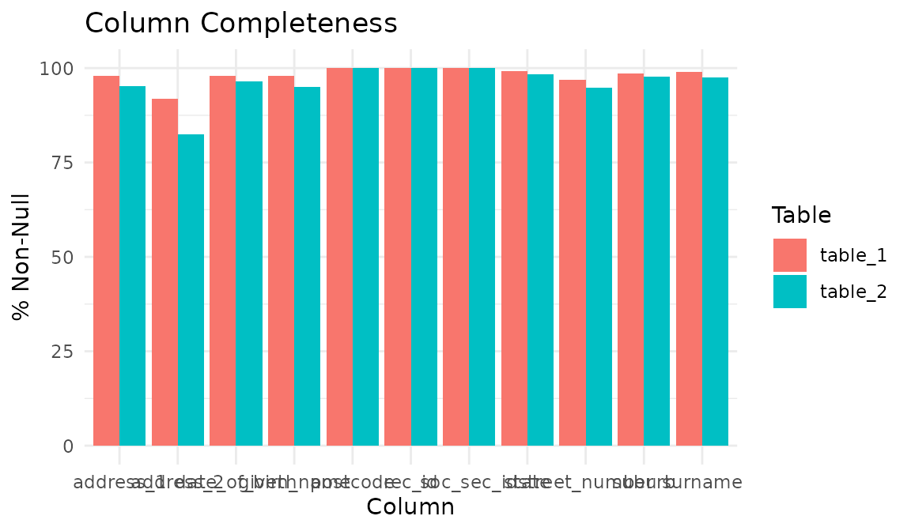
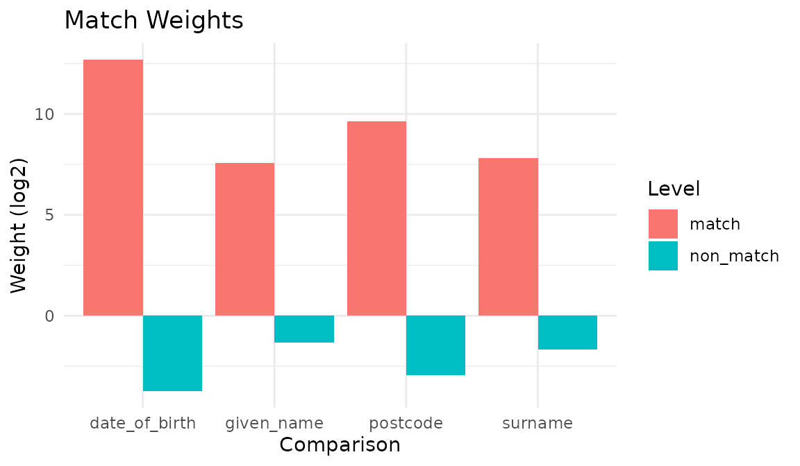
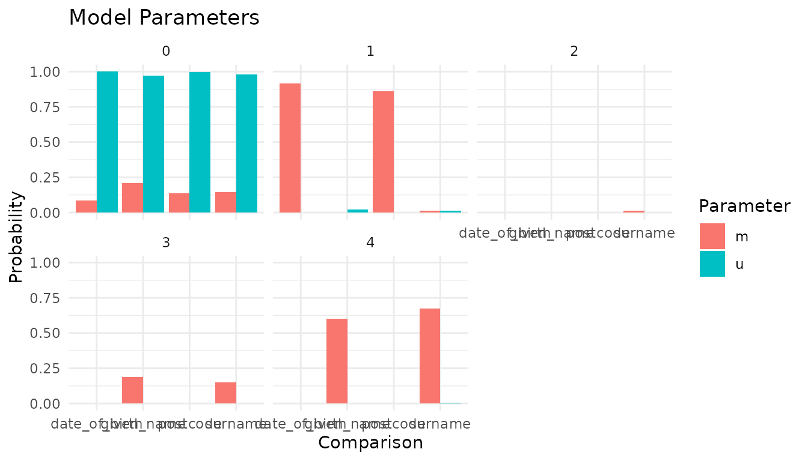
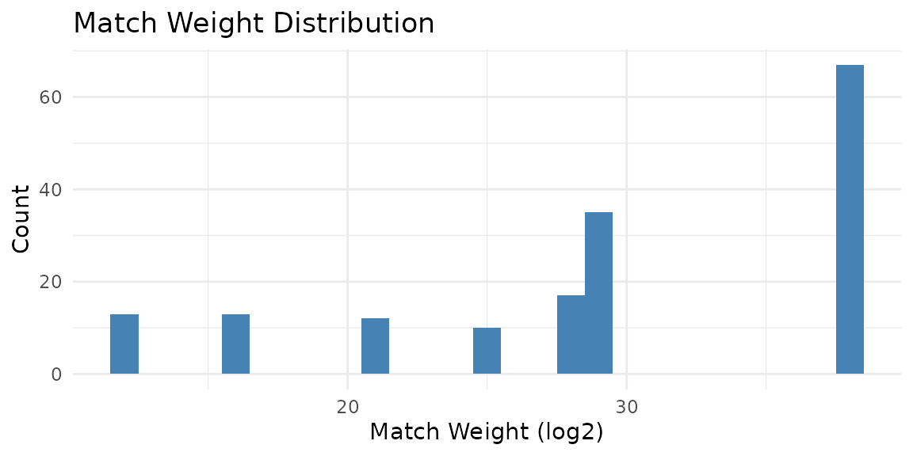
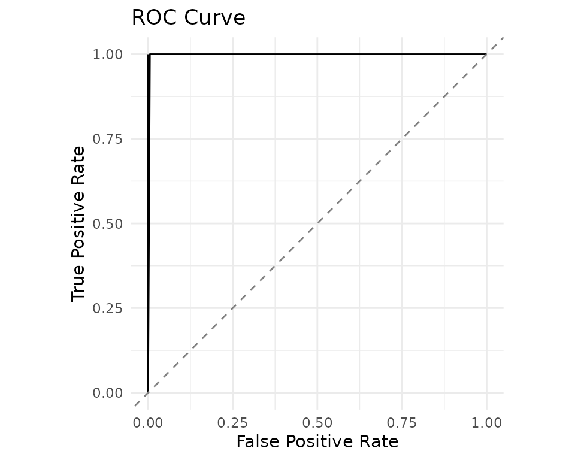
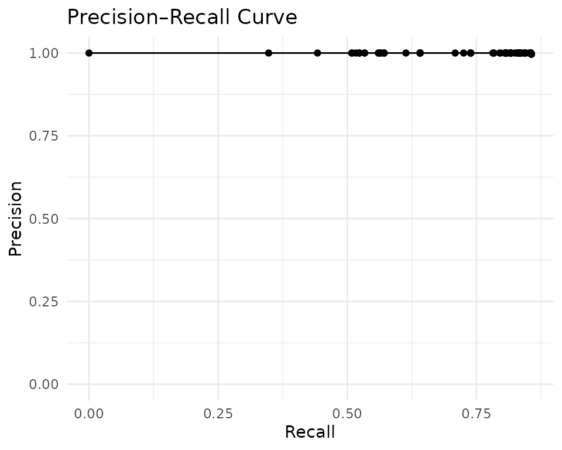

Record Linkage Across Datasets
record-linkage.RmdThis vignette demonstrates linking records across two separate
datasets using the FEBRL (Freely Extensible Biomedical Record Linkage)
benchmark data. Dataset 4a contains 5,000 original records and dataset
4b contains 5,000 duplicates — one for each original — corrupted with
typographical errors, missing values, and transpositions. Ground truth
is encoded in the rec_id column: records sharing the same
base number (e.g., rec-1070-org and
rec-1070-dup-0) refer to the same entity.
Load the data
head(febrl4a)
#> # A tibble: 6 × 11
#> rec_id given_name surname street_number address_1 address_2 suburb postcode
#> <chr> <chr> <chr> <int> <chr> <chr> <chr> <int>
#> 1 rec-1070… michaela neumann 8 stanley … miami winst… 4223
#> 2 rec-1016… courtney painter 12 pinkerto… bega fla… richl… 4560
#> 3 rec-4405… charles green 38 salkausk… kela dapto 4566
#> 4 rec-1288… vanessa parr 905 macquoid… broadbri… south… 2135
#> 5 rec-3585… mikayla mallon… 37 randwick… avalind hoppe… 4552
#> 6 rec-298-… blake howie 1 cutlack … belmont … budge… 6017
#> # ℹ 3 more variables: state <chr>, date_of_birth <int>, soc_sec_id <int>
head(febrl4b)
#> # A tibble: 6 × 11
#> rec_id given_name surname street_number address_1 address_2 suburb postcode
#> <chr> <chr> <chr> <int> <chr> <chr> <chr> <int>
#> 1 rec-561-… elton NA 3 light se… pinehill winde… 3212
#> 2 rec-2642… mitchell maxon 47 edkins s… lochaoair north… 3355
#> 3 rec-608-… NA white 72 lambrigg… kelgoola broad… 3159
#> 4 rec-3239… elk i menzies 1 lyster p… NA north… 2585
#> 5 rec-2886… NA garang… NA may maxw… springet… fores… 2342
#> 6 rec-4285… sophie manson 14 elizabet… manorhou… gorok… 3465
#> # ℹ 3 more variables: state <chr>, date_of_birth <int>, soc_sec_id <int>Explore data quality
Check completeness across both tables. Table B has more missing values due to the corruption process:
con <- DBI::dbConnect(duckdb::duckdb())
comp <- il_completeness(febrl4a, febrl4b, con = con)
comp
#> # A tibble: 22 × 5
#> table column n_total n_non_null pct_non_null
#> <chr> <chr> <int> <int> <dbl>
#> 1 table_1 rec_id 5000 5000 100
#> 2 table_1 given_name 5000 4888 97.8
#> 3 table_1 surname 5000 4952 99.0
#> 4 table_1 street_number 5000 4842 96.8
#> 5 table_1 address_1 5000 4902 98.0
#> 6 table_1 address_2 5000 4580 91.6
#> 7 table_1 suburb 5000 4945 98.9
#> 8 table_1 postcode 5000 5000 100
#> 9 table_1 state 5000 4950 99
#> 10 table_1 date_of_birth 5000 4906 98.1
#> # ℹ 12 more rows
autoplot(comp)
Define the specification
For linking (as opposed to deduplication), set
link_type = "link" when creating the model. Comparisons use
name similarity, date-of-birth matching, and postcode exact
matching:
spec <- il_spec() |>
il_compare(given_name, cl_name()) |>
il_compare(surname, cl_name()) |>
il_compare(date_of_birth, cl_exact()) |>
il_compare(postcode, cl_exact()) |>
il_block_on(surname) |>
il_block_on(given_name)
spec
#> Linkage Specification
#> Comparisons (4):
#> given_name : levels
#> surname : levels
#> date_of_birth : exact
#> postcode : exact
#> Blocking rules (2, OR-ed):
#> 1. surname
#> 2. given_nameTrain the model
Create a link-type model with both tables:
model <- il_model(
febrl4a, febrl4b,
spec = spec,
con = con,
link_type = 'link'
)
model
#> irelink Model
#> Status: Untrained
#> Link type: link
#> Records: 5000
#> Records (right): 5000
#> Comparisons: 4
#> Blocking rules: 2Estimate prior match probability, u-probabilities, and run EM:
model <- il_estimate_prior(
model,
block_on(given_name, surname),
block_on(surname, suburb),
recall = 0.6
)
model <- il_estimate_u(model, max_pairs = 1e5)
model <- il_estimate_em(model, block_on(surname))
#> EM trained: given_name, date_of_birth, and postcode | skipped (blocked on):
#> surname
model <- il_estimate_em(model, block_on(suburb))
#> EM trained: given_name, surname, date_of_birth,
#> and postcodeInspect the model
autoplot(model)
autoplot(model, type = 'parameters')
il_weights(model)
#> # A tibble: 14 × 5
#> comparison gamma_level m_prob u_prob weight
#> <chr> <int> <dbl> <dbl> <dbl>
#> 1 given_name 0 0.157 0.969 -2.63
#> 2 given_name 1 0.0136 0.0247 -0.865
#> 3 given_name 2 0.0135 0.00127 3.41
#> 4 given_name 3 0.127 0.00127 6.64
#> 5 given_name 4 0.690 0.00396 7.44
#> 6 surname 0 0.125 0.980 -2.97
#> 7 surname 1 0.00700 0.0124 -0.826
#> 8 surname 2 0.0163 0.00127 3.68
#> 9 surname 3 0.182 0.00145 6.97
#> 10 surname 4 0.670 0.00440 7.25
#> 11 date_of_birth 0 0.103 1.000 -3.28
#> 12 date_of_birth 1 0.897 0.0002 12.1
#> 13 postcode 0 0.165 0.999 -2.60
#> 14 postcode 1 0.835 0.00124 9.40Predict and cluster
autoplot(predictions)
Cluster the pairs to resolve entities:
clusters <- il_cluster(predictions, threshold = 0.85)
head(clusters)
#> # A tibble: 6 × 2
#> unique_id cluster_id
#> <chr> <chr>
#> 1 2072 cluster_2072
#> 2 420 cluster_1741
#> 3 1158 cluster_1158
#> 4 2361 cluster_2248
#> 5 2705 cluster_2705
#> 6 2234 cluster_2234Evaluate against ground truth
The rec_id column encodes ground truth. Extract entity
IDs and build pairwise labels:
# Extract entity number from rec_id (e.g., "rec-1070-org" -> "1070")
entity_a <- sub('^rec-(\\d+)-org$', '\\1', febrl4a$rec_id)
entity_b <- sub('^rec-(\\d+)-dup-\\d+$', '\\1', febrl4b$rec_id)
# Build id-entity lookup (unique_id auto-generated by il_model)
ids_a <- data.frame(unique_id = seq_len(nrow(febrl4a)), entity = entity_a)
ids_b <- data.frame(unique_id = seq_len(nrow(febrl4b)), entity = entity_b)
# True matches: same entity across tables
positives <- merge(ids_a, ids_b, by = 'entity')
names(positives) <- c('entity', 'unique_id_l', 'unique_id_r')
positives$is_match <- 1L
positives <- positives[, c('unique_id_l', 'unique_id_r', 'is_match')]
# Sample non-matching pairs
set.seed(42)
n_neg <- min(nrow(positives), 2000L)
neg_l <- sample(ids_a$unique_id, n_neg, replace = TRUE)
neg_r <- sample(ids_b$unique_id, n_neg, replace = TRUE)
ent_l <- ids_a$entity[match(neg_l, ids_a$unique_id)]
ent_r <- ids_b$entity[match(neg_r, ids_b$unique_id)]
negatives <- data.frame(
unique_id_l = neg_l,
unique_id_r = neg_r,
is_match = ifelse(ent_l == ent_r, 1L, 0L)
)
labels <- rbind(positives, negatives)
nrow(labels)
#> [1] 7000
sum(labels$is_match)
#> [1] 5001Because labels includes all true cross-table matches,
any true match missed by the blocking rules is counted as a false
negative in the evaluation curves below.
ROC and Precision–Recall

pr <- il_precision_recall(model, labels = labels)
autoplot(pr)
Cleanup
il_cleanup(model)
DBI::dbDisconnect(con, shutdown = TRUE)il_cleanup(model) is model-scoped. If an interactive run
failed before you kept the model object, call
il_cleanup_all(con) to remove all irelink
tables from the connection before disconnecting.